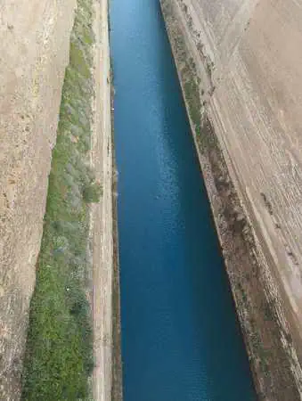
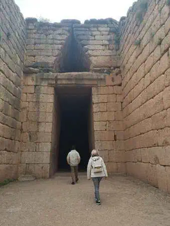
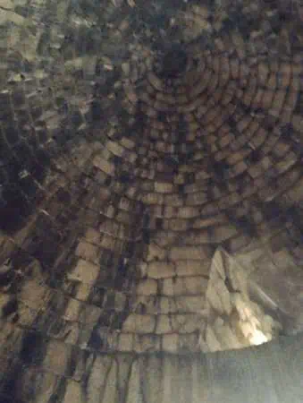
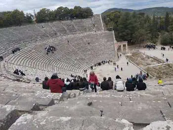
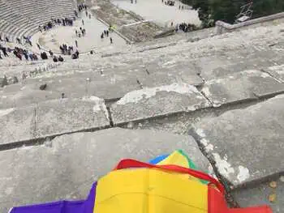
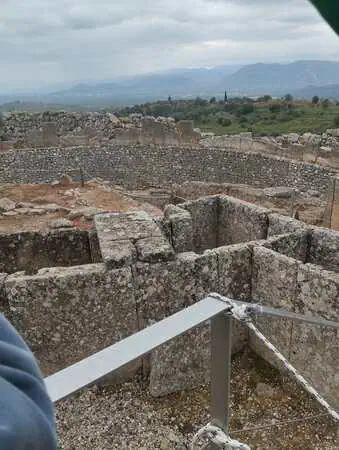
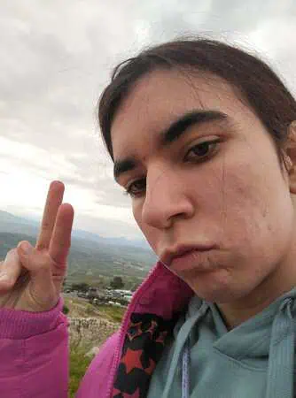
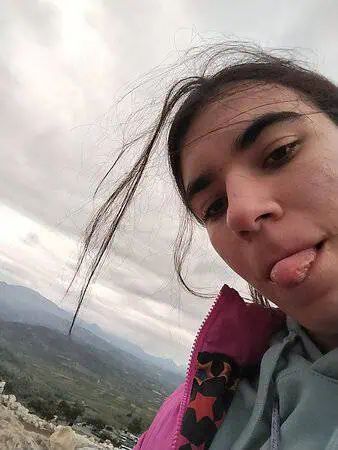
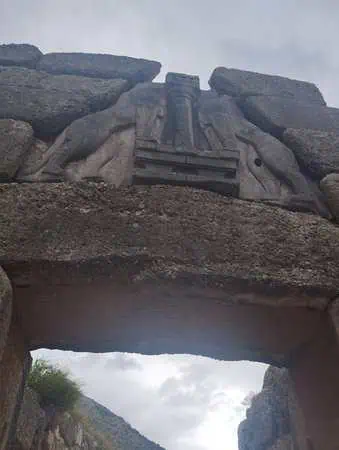

<!DOCTYPE html>
<html lang="es"></html>


<head>


<title>Dia 4</title>
<meta name="keywords" content="Atenas, Viajes, Grecia">
 <meta name="author" content="Antía" >
 <meta name="description" content="Pagina sobre el viaje a Grecia">
 <meta charset="utf-8">
 <link rel="icon" href="img/favicon-32x32.png" type="image/png">
 <link rel="stylesheet" href="estilosdias.css">
</head>
<body>
    <nav>
        <ul>
        
            <li><a href="index.html">Portada</a> </li>
            <li><a href="Dia1.html">Día 1</a> </li>
            <li><a href="Dia2.html">Día 2</a> </li>
            <li><a href="Dia3.html">Día 3</a> </li>
            <li><a href="Dia4.html">Día 4</a> </li>
            <li><a href="Dia5.html">Día 5</a> </li>
            <li><a href="Dia6.html">Día 6</a> </li>
            <li><a href="Dia7y8.html">Días 7 y 8</a> </li>
        </ul>
    </nav>
<h1>     Día 4 (Argolida/Αργολίδας)</h1>
<article>
   <div class="foto_izquierda">
    
    
    <p>Este día comenzó de manera normal, bajamos a desayunar,
         nos preparamos y nos fuimos en bus con nuestra guía a otra zona de Grecia,
          el trayecto inicial fue de unas 3 horas y algo para llegar a una especie de canal
           que se usaba en la antigüedad para conectar dos mares, actualmente debido a su reducido
            tamaño no se usa; esta parada fue de unos 30 minutos para posteriormente seguir nuestro
             trayecto en bus.
</p>
   </div>
</article>

  
<article>
    <div class="foto_derecha"> 
        
            
    <p>Nuestro siguiente destino era una antigua tumba que tenía el techo en 
        forma cónica haciendo que tuviera una buena acústica, fue ahí donde la guia 
        nos recitó un cántico en griego(no me entere de nada pero era muy épico) ; 
        después de eso fuimos al conocido como el teatro con mejor acustica del mundo,
         el teatro de Επίδαυρος (Epidauro),el titulo estaba 100% merecido,estaba en la
          parte alta del teatro y podía escuchar al que estaba en el centro.
          </p>
    
    
    
    


</div>
</article>
<article>
    <div class="foto_izquierda">
        
        
        
        
        <p> Tras esto comimos por la zona y nos fuimos en bus 
            a unas ruinas muy bonitas, la verdad como el tiempo no acompañaba la mayoría no 
            quiso bajar; una vez más yo no estuve en esa mayoría, las vistas eran muy bonitas y , 
            a pesar del frío y la lluvia, era algo muy disfrutable.</p>
    </div>
</article>
<article>
    <p>Tras esto fuimos a un restaurante a comer y una vez estábamos todos en
         el bus comenzamos el camino de vuelta, fueron 4 horas más o menos para llegar a Atenas,
         ( yo dormí parte del trayecto) una vez ahí nos despedimos de Irini pues al siguiente día
          ya nos íbamos a ir... o eso pensabamos...
</p>
</article>
<article>
    <p> Como aun era temprano los profesores nos propusieron ir a dar una vuelta por el centro,
         por el cansancio la mayoría dijo que no, una vez más yo no estaba en esa mayoría,
          fuimos a comprar unas cosas mientras esperábamos a ver el cambio de guardia que la verdad
           estuvo muy interesante y después fuimos a dar una vuelta libre por el centro.
</p>
</article>
<article>
    <p>Fue 1 hora libre para después juntarnos y volver al hotel caminando, 
        en ese trayecto yo estaba de las primeras del grupo (yo camino muy rápido)y
         escuche que mi profesor menciono algo de una huelga mientras hablaba por teléfono, yo no
          le di importancia al principio(gran error por mi parte).

</p>
    
</article>
<article>
    <p>El resto del trayecto transcurrió con normalidad, llegamos al hotel y 
        estuvimos en tiempo libre; fue ahí cuando los profesores nos avisaron por el grupo del viaje de
         que fuéramos a la recepción del hotel, que tenían que decirnos unas cosas. <br>
 Bajamos un poco confundidos pues aún no era hora de cenar y todo parecía ir perfectamente 
 de acuerdo al plan original.
</p>
</article>
<article>
    <p>Nos sentamos en los distintos asientos de la recepción y 
        fue ahí cuando nuestro profesor de filosofía nos preguntó de una manera muy sutil:
         “Primero¿cómo lo estáis pasando?” a lo que todos respondimos que muy bien 
después dijo : “Me alegro , ¿os gustaría quedaros más días?” a lo que todos dijimos que sí , 
y dijo: “Pues nos quedamos más días” al principio pensábamos que era una broma pero no, resulta
 que había una huelga de controladores aéreos al dia siguiente y no podríamos volver ese dia; todos nos
  alegramos por esto pero nos dijeron que no sabían cuándo podríamos volver
  (porque colocar a unas 56 personas no es precisamente fácil cuando solo hay 3 adultos responsables).  
</p>
</article>
<article>
    <p>Preguntaron quién tenía más prisa para volver,11 personas levantaron la mano;tras esta 
        noticia nos fuimos a cenar y nos acostamos sabiendo que al día siguiente íbamos a hacer 
        algo que se salía de la organización inicial de la salida.
</p>
</article>
<article>
    <p>Este día que parecía ser el más aburrido por las distintas visitas iniciales resultó ser uno que cambiaría totalmente nuestros planes .
</p>
</article>

</body>